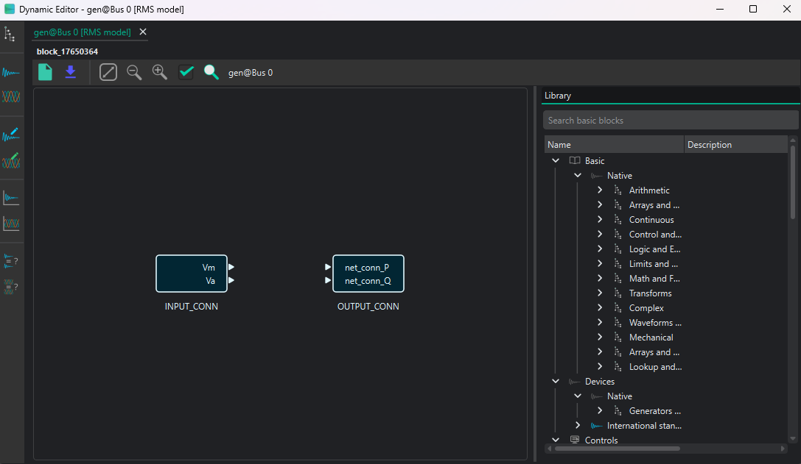
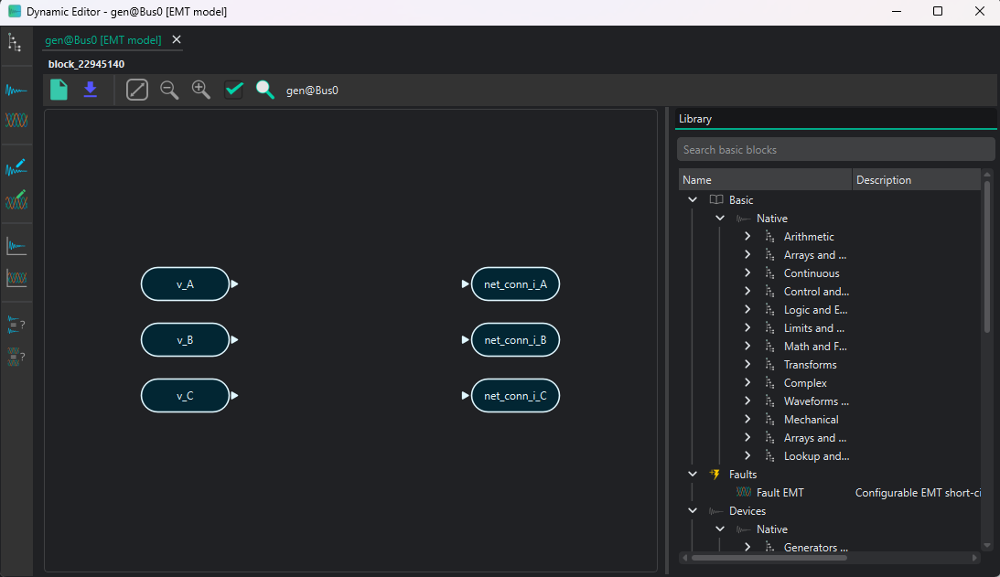
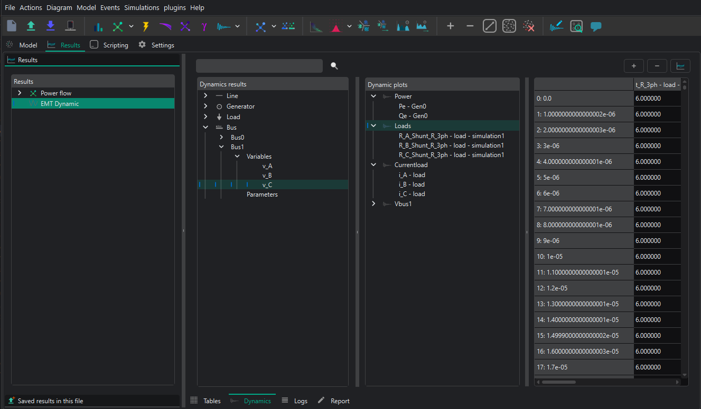

Dynamic workspace and editors
The dynamic workspace brings model construction, scenario definition, model comparison, and plot preparation into one window. It contains separate RMS and EMT pages, but both domains follow the same save and navigation principles.
Workspace structure
The device tree identifies the grid object whose dynamic model is being edited. The workspace toolbar opens these pages:
Page |
Purpose |
|---|---|
RMS Editor |
Build and validate the RMS block model of one device |
EMT Editor |
Build and validate the EMT block model of one device |
RMS Events |
Create RMS event groups, steps, and ramps |
EMT Events |
Create EMT event groups, steps, and ramps |
RMS Compare |
Compare parameters in compatible saved RMS models |
EMT Compare |
Compare parameters in compatible saved EMT models |
RMS Plots |
Prepare persistent RMS plot groups |
EMT Plots |
Prepare persistent EMT plot groups |
Pages open as tabs inside the workspace and can be detached and reattached. An editor tab with unsaved changes is marked as dirty. Other pages use the last model saved to the circuit, not an unsaved working copy.
RMS and EMT model editors
The model editor contains a block canvas and a library pane. When a device is opened, VeraGrid supplies the grid connection blocks required by that device. Add functional blocks from the library and connect compatible output and input ports.

The EMT editor uses the same workspace and exposes phase-domain terminals where required.

Block properties
Open a block’s properties to inspect or edit these areas:
General options: identity, ports, variables, parameters, and operating-point bindings.
DAE model: state, algebraic, and derivative variables; state and algebraic equations; initialization equations; and equation ownership.
Runtime logic: procedural entries, retained modes, limits, and switching behaviour.
Special settings: block-specific configuration when the model requires it.
The DAE model can also be rendered as code, LaTeX, or PDF for inspection. The current authoring fields are state_vars, algebraic_vars, diff_vars, state_eqs, algebraic_eqs, init_eqs, and diff_init_eqs.
Apply and save
The editor works on an isolated copy so partially edited equations do not immediately alter the circuit model. Use the validation action first, review the reported diagnostics, and then apply or save the model to the device. Closing a dirty tab without applying its changes discards that working copy.
After saving a model, refresh the Events, Comparison, or Plots page if it was already open. Those pages resolve variables and parameters from the saved circuit model.
Events page
The Events page edits all scenarios for the selected domain.
The source tree lists devices and model parameters that can receive an event.
The scenario tree lists event groups and their step or ramp events.
Search fields filter both sides of the page.
Dragging an eligible parameter into an event group creates an event for that parameter.
An event group represents one complete simulation scenario. A group with no events is a valid base case. A step has one activation time and a target value. A ramp has start and end times and interpolates toward the configured value.
Event-page changes are stored directly in the circuit. Before running, check that every event refers to a parameter in the current saved model and that at least one event group exists.
Comparison page
The Comparison page groups devices whose saved RMS or EMT models are structurally compatible. It presents their parameters in a spreadsheet-like view so values can be reviewed side by side.
Use it to:
identify inconsistent parameterization across equivalent devices;
copy or fill a value across a selected model group;
stage several edits before saving them together.
The page compares saved models. Changes still open in a model-editor working copy do not appear until that model is applied.
Plots page
The Plots page defines persistent plot groups before a simulation is run. The source tree is built from the variables and parameters in the saved dynamic models.
Two plot forms are available:
Time series, where one or more signals are plotted against simulation time.
X-Y plot, where one selected signal is plotted against another.
Create a plot group, choose its form, and drag variables or parameters from the source tree into it. Plot definitions belong to the circuit and are reused when new results are produced. The Results view and the Plots page therefore show the same persistent plot groups.
Results view
After a simulation, open Results → RMS Dynamic or Results → EMT Dynamic. The view contains:
a device-and-variable result tree;
the persistent dynamic plot groups;
the numerical data table for the current selection.
Double-click a result variable to plot it directly. To combine signals, drag them into a plot group and open the group. Use the scenario selector to choose the event group whose trajectory is displayed. An unavailable group or variable normally means that the scenario did not produce results or that the saved model changed after the result set was created.

Recommended editor workflow
Open the RMS or EMT editor for the target device.
Build, connect, parameterize, and validate the block model.
Apply the model to the circuit.
Open the Events page and create a base case or disturbed scenarios.
Use Comparison when equivalent devices should share selected parameters.
Prepare time-series or X-Y groups in Plots.
Run the formulation-specific simulation.
Inspect status, individual trajectories, and persistent plot groups in Results.
For equation-level authoring, see Writing DAE models in VeraGrid. For complete simulation settings and API examples, see RMS simulations or EMT simulations.